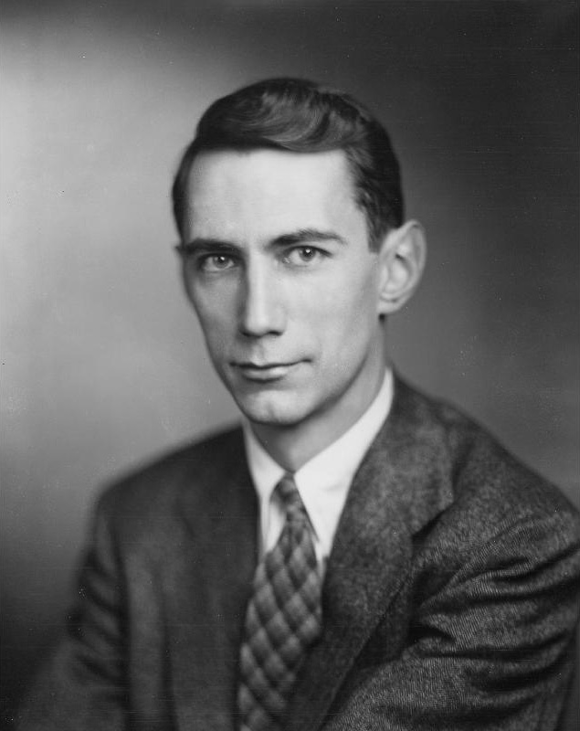

value Claude Shannon, qui fut l’un des responsables de la révolution numérique que nous vivons actuellement. John von Neumann, Alan Turing et bien d’autres visionnaires nous ont donné des ordinateurs capables de traiter l’information. Mais ce fut Claude Shannon qui a introduit le concept moderne de l’information.
La théorie de l’information est née d’un article en deux parties que Shannon a publié en 1948, quand il était chercheur aux Laboratoires Bell. Shannon a montré dans cet article comment la notion jusqu’alors vague d’information pouvait être définie et quantifiée avec précision. Il a démontré l’unité essentielle de tous les moyens d’information, en soulignant que les textes, les signaux téléphoniques, les ondes radio, les photos, les films, etc pouvaient être codés dans le langage universel des chiffres binaires, ou bits, terme que son article a été le premier à utiliser. Shannon a mis en avant l’idée que, une fois que l’information était devenue numérique, elle pouvait être transmise (ou stockée) avec un taux d’erreur qui pouvait être rendu arbitrairement petit, et ce même si le canal lui-même est imparfait, source de bruit et d’erreur. Ce fut un saut conceptuel qui a conduit directement à des moyens de communication (et de stockage) robustes et rapides. La théorie de l’information de Shannon a montré que les limites ultimes de capacité de communication (et de stockage) de l’information étaient liées au bruit présent dans les canaux. Ceci a permis de définir une frontière entre ce qui est possible et ce qui est impossible de faire en termes de capacité de transmission. Au début des années 2000, le domaine de recherche sur la théorie de l’information a frôlé la mort, car il a semblé qu’on avait atteint les limites de capacité telles que prédites par Shannon. Cependant on verra que le bruit peut s’avérer bien surprenant, voire même utile.